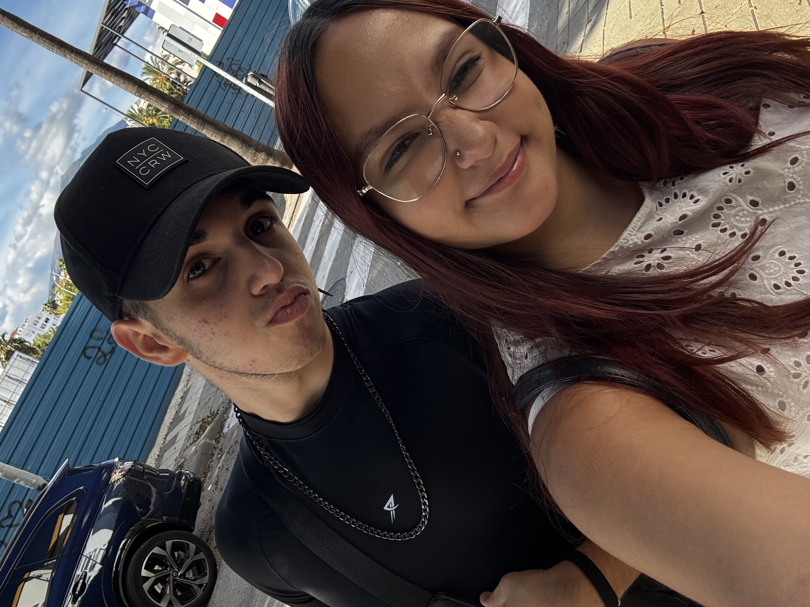
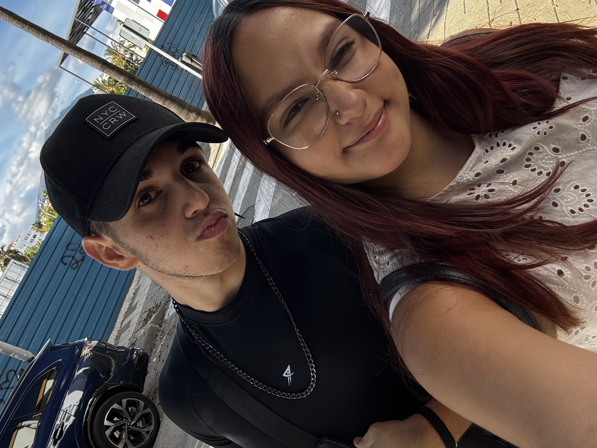
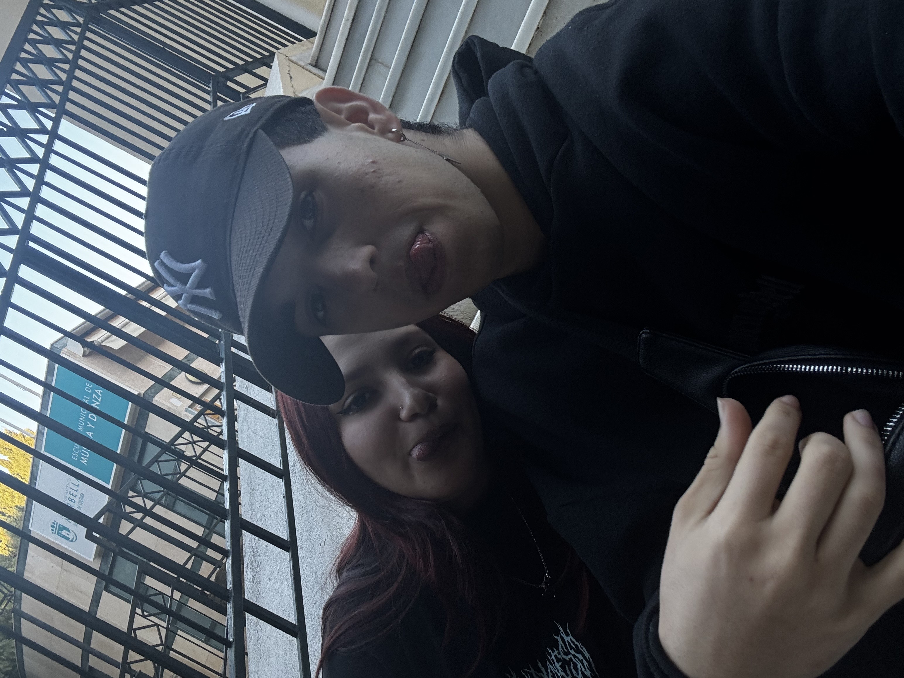
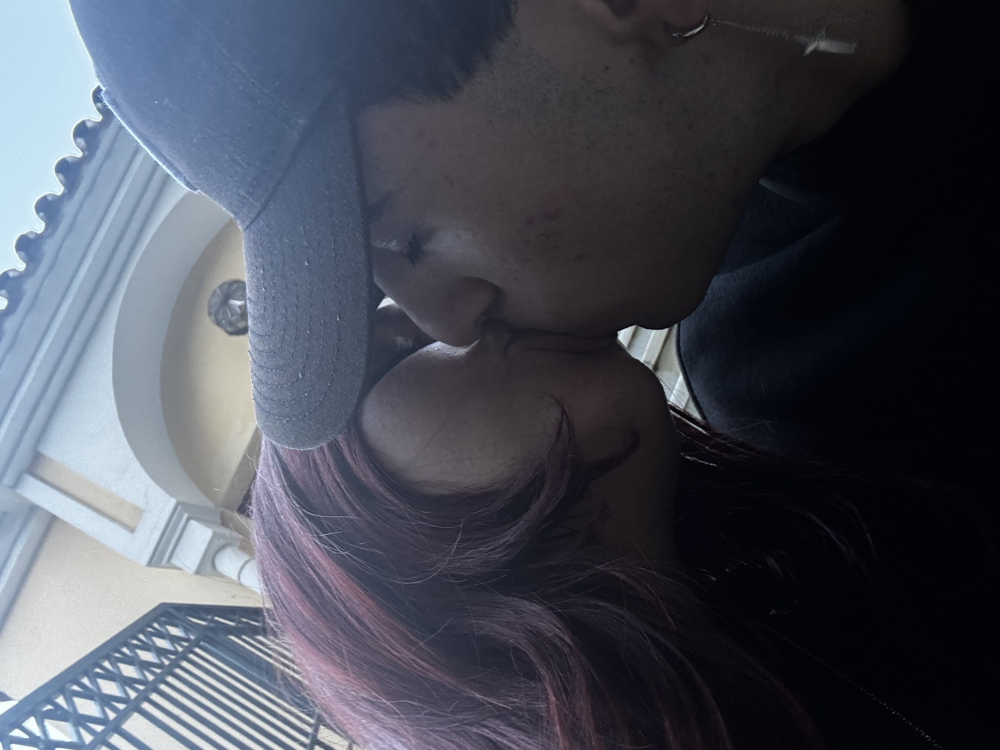
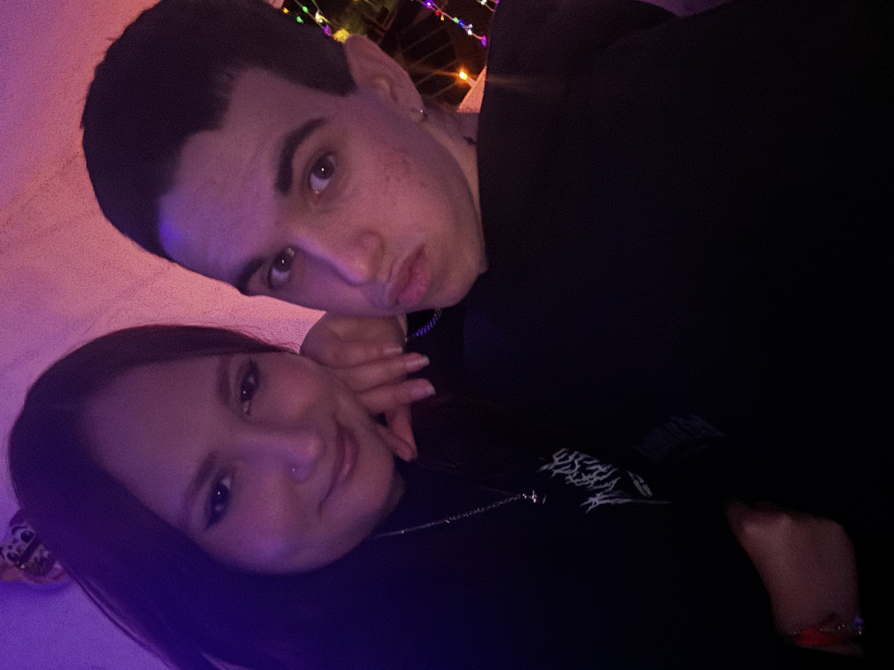
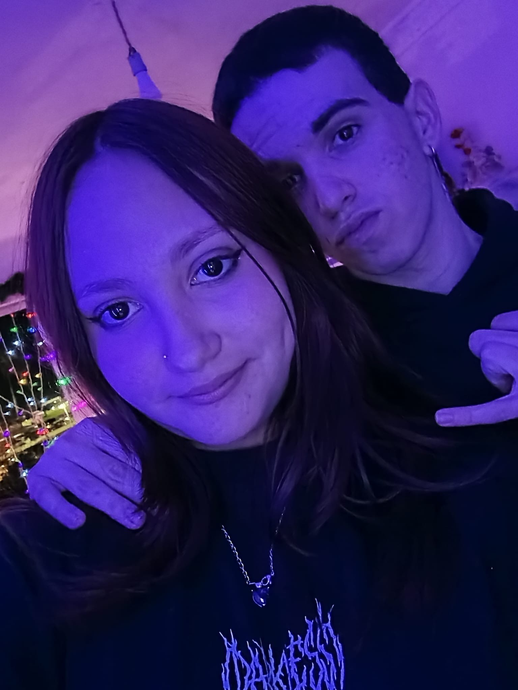
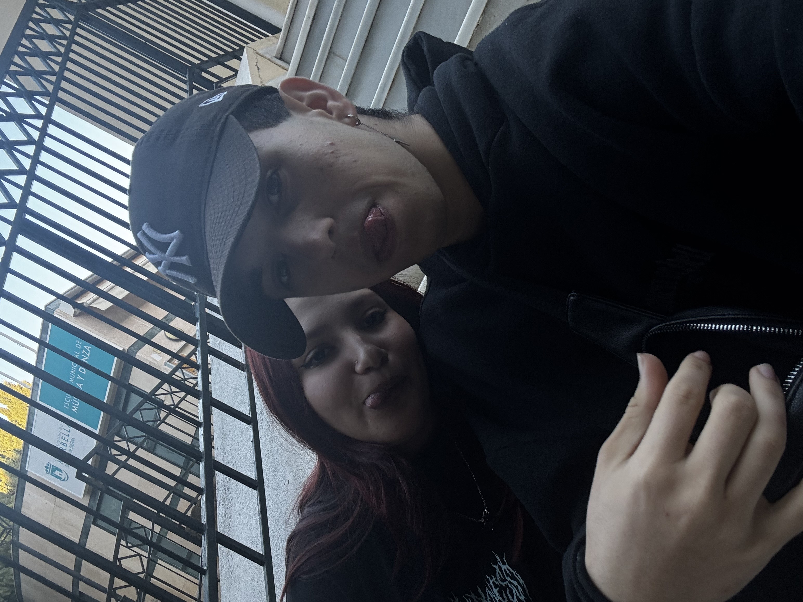
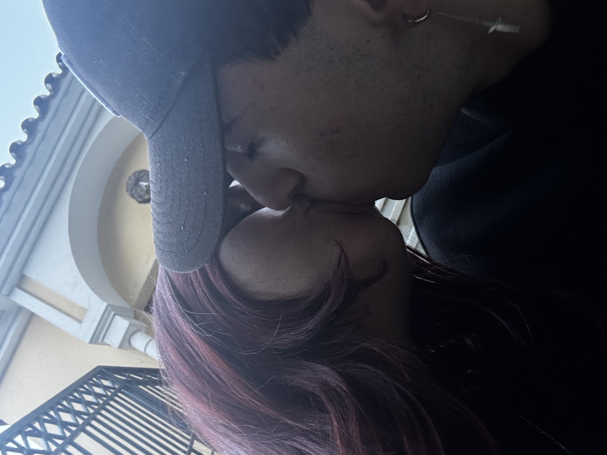
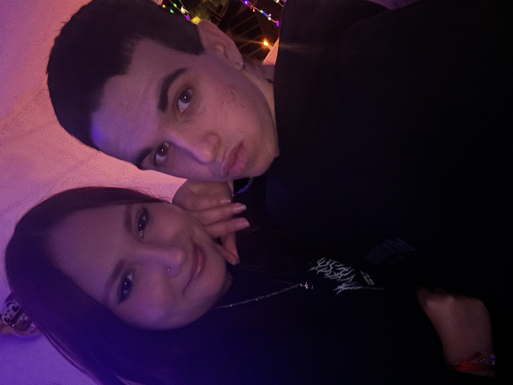
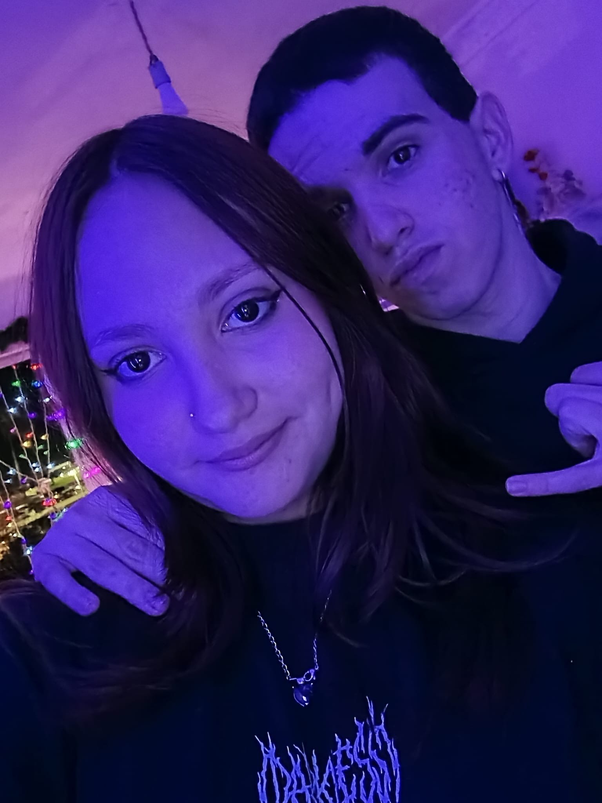

FELIZ 9 MESES MI VIDA
Esta página no es solo una web. Es un lugar donde todo lo que siento tiene forma.
Recuerdo cada momento, cada risa, cada mirada... 14.643 razones para sonreír contigo.
 



 







Poetas y su amada
❝ Quiero hacer contigo lo que la primavera hace con los cerezos. ❞— Pablo Neruda
❝ Te amo por quien eres, y por quien soy cuando estoy contigo. ❞— Mario Benedetti
❝ ¿Cómo te amo? Déjame contar las maneras. ❞— Elizabeth Barrett Browning
❝ No amo nada en el mundo tanto como a ti. ❞— William Shakespeare
❝ llevo tu corazón conmigo (lo llevo en mi corazón). ❞— E. E. Cummings
❝ Donde tu estas, allí esta mi hogar. ❞— Rumi
❝ Eres el refugio de mi corazón; en ti encuentro mi paz. ❞— Rumi
❝ Envejece conmigo: lo mejor está por venir. ❞— Robert Browning
❝ Si te amara menos, podría hablarlo más. ❞— Jane Austen
9 meses son los que mas enamorado estoy de ti
9 meses son los que llevamos, 9 meses son los que un bebe tarda en nacer, 9 meses son los que casi terminan un año, 9 meses son los que uno tarda en darse cuenta en lo rapido que pasa el tiempo, es increible, como un hola terminó en este sueño de Disney, como un beso terminó en promesa de un corazon al otro, como un abrazo terminó en el refugio del otro, es impresionante, pues antes de tenerte conmigo, sentia frio, vacio, me sentia perdido, pues veia a todos con felicidad, pero la mia se la habia robado el tiempo, situaciones y momentos malos que se grabaron en mi mente como si fuera una pelicula en bucle, te conoci en un momento horrible, pues yo miraba el mundo y lo veia de colores grises, empezamos a hablar, y tuve con quien contar mis cosas, pasó un dia, y nos volvimos novios, y es increible, como de un dia para otro dos almas se encuentran y conectan tan facil, pero me encanta porque desde que te conoci ya no me siento fragil, te conoci sintiendo frio, y me hiciste sentir calor, que hace mucho no habia sentido, me diste un refugio, me diste lo mejor, y yo te prometi, a tu corazon, que si lo robaba seria por esta razon, cuidarlo y sanarlo de todo su dolor, amarlo y consolarlo para que tenga color, sanarte y cicatrizarte las heridas del pasado, con un amor intenso que nunca te habian dado, y aqui estamos despues dde 9 meses, casi llegando a un año, y mi corazon sigue en llamas, y mi alma deseando estar a tu lado, pues que historia mas bonita, parece un cuento inventado, pero es un cuento real de esos que no muchos han experimentado, pues el amor que tu me brindas, es mas de lo que pudiera haber deseado, no hay mejor regalo, que tu afecto y amor a mi alma, que tu cariño a mi corazon, pues tu encontraste mi corazon casi destrozado, en unos minutos lo arreglaste por todos lados, es como si tuviera 10 añitos, cuando estoy a tu lado, pues no hay mejor lugar, que el que tengo cuando estoy a tu lado.
Perfeccion lleva tu nombre y apellidos tu belleza y tu sentido
Para ti, que llenas mis días de luz y confidencias; cada instante a tu lado convierte lo cotidiano en eternidad. Esta página es un susurro que guarda nuestras pequeñas inmensidades, para ti, que cambias un dolor por un te amo, que cambias una tristeza por un abrazo, que me rescataste cuando estaba roto, y color a mi alma has dado. Esto no es solamente una dedicatoria, es el susurro que mi alma queria contarte, pues mi alma se queda en calma cuando es a ti a quien voy a mirarte, pues mi corazon late y late, cuando un beso me das, pues mis brazos deciden abrazarte para explicarte lo mucho que me das, es increible, pues la Luna gira para la Tierra, y yo solamente giro para ver cada milimetro de luz que tu compartes en mis dias, pues no hay mejor melodia, que la que tu voz me brinda con cada sintonia, cada dulzura de tu alma muy pura, es lo que me da la ternura y me hace verte como la mayor preciosura, eres un tesoro de los que pocos encuentran, y yo lo encontre sin ser marinero, me volvi pirata por ti, para tener tu amor eterno, verdadero y por siempre, pues contigo quiero pasar mis Diciembres, aunque ahora no sea fisicamente, nuestras almas siempre estaran presentes, casi que se termina el año, y este año lo paso contigo, pues se quedara como un recuerdo en una piedra, mas las que pondremos al lado, para hacer una montañita, de recuerdos que hemos vivido, pues no hay mejor recuerdo que el que tu en mi vida has convertido, lo que me calma no es el mar ni la estrellas, eres tu mi querida doncella, pues tienes unos labios que hipnotizan y una mirada que destella, y me encanta sentirme asi, como un loco enamorado, pues no hay amor que quiera sentir, si no es el tuyo a mi lado, pues el tuyo elijo por siempre, porque es el que eternamente tendre en mi corazon, y no me arrepiento de nada, pues eres de mi vida la razon para seguir existiendo y representarte los latidos de mi corazon.
Mas una eternidad junto a ti
A la luz de un crepúsculo compartido, cerraron ese capítulo con la certeza de que sus días seguirían entrelazados como páginas de un libro amado: simples, intensos y siempre dispuestos a volver al mismo abrazo. Y así, comenzaron su nuevo año, dispuestos a superar todos los peldaños, reforzando sus almas en un amor eterno inmune a daños, se prometieron amor infinito, para ver cuando explota el Sol, pues no hay mayor amor, que el de ellos dos, tan brillante que es su dama, tan intenso que es su amor, tan enamorado que esta su hombre, de esa modelo con belleza eterna, tan dispuestos a reparar sus corazones de cualquier mal que llegue a sus vidas. Y esos dos somos nosotros, que cerramos este año por lo alto, y nos queda el siguiente juntos mas una eternidad a tu lado, eres lo mejor que me ha pasado, en esta vida y en mis antepasados, seguro prometi buscarte cariño, y despues de galaxias te he encontrado, y en la proxima vida, te encontraria mas rapido, para pasar mas tiempo contigo, y que mi tiempo se quede parado, parado como cuando te miro, que no se si son horas las que pasaron, pues eres mi salvacion en el mar, porque en el mar perdido me has encontrado, y me salvaste y rescataste, me diste tu amor y tus besos, y desde entonces yo cuidare tu alma de por siempre para que mi corazon siempre se encuentre a tu lado. Felices 9 Meses cariño mio, como 9 fotos he puesto, pues no hay nada mejor que esto, porque dedicarte esto es mi mayor deseo, te amo mas de lo que deseo, y te deseo mas de lo que te amo, por ti te daria el mundo entero, aunque te lo tenga que representar en un ramo, de seguro te dare el universo, pero cuando tenga la fuerza de tenerlo con mi mano, por ti me volvere inmortal, para viajar al espacio, traerte una estrella y una galaxia, y poder explicarte, que ni una estrella ni una galaxia, brilla mas que tu corazon encantado.